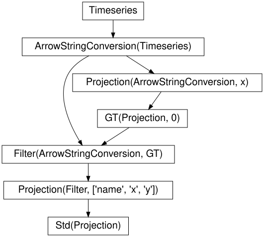
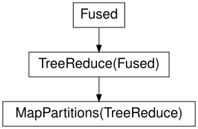
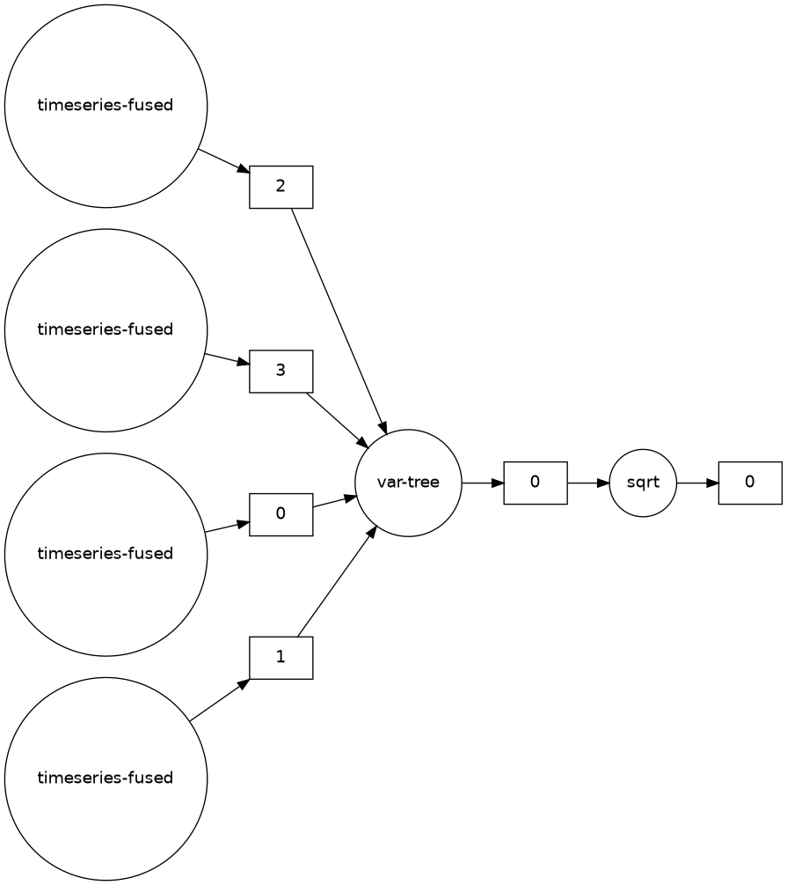

Lecture 27: Performance of big data problems II
![]()
Centre for Advanced Research Computing
Introduction
This lecture will talk about three open-source frameworks for large scale data processing:
- Apache Hadoop,
- Apache Spark,
- Dask.
All three allow users to take advantage of distributed architectures for data processing.
Learning outcomes
- Describe the key features of Hadoop, Spark and Dask.
- Recognize the advantages of using distributed file systems for data processing.
- Use
pysparkto programmatically access Spark’s capabilities. - Explain why we would want to perform stream data processing.
- Compare Spark and Dask’s differences and similarities.
Hadoop
Hadoop is a framework with several components.
We will focus on two of them:
- The Hadoop Distributed File System (HDFS).
- An implementation of MapReduce.
Together, these two elements let users distribute data processing across many nodes without having to worry (too much) about how files are structured or how computation is performed.
Distributed file systems
Distributed file systems store files across many storage nodes.
Instead of a single copy, each file resides in multiple copies across different parts of the system.
- Data locality - processing tasks can locally access data they need.
- Consistency ensured through synchronization.
- Scalable by adding more nodes.
- Resistant to failure.
- Transparency - the user should not need to know the details of how the file system works.
Hadoop MapReduce
To write a MapReduce application in Hadoop, a user must:
- Specify the mapper (how should a small chunk of data be processed?).
- Specify the reducer (how should the mapper results be combined?).
- Get the data onto HDFS (the cluster nodes).
- Launch the job by pointing to the data, mapper and reducer.
Hadoop is Java based but it is possible to specify the mapper and reducer in other languages using the Hadoop Streaming interface - for example in Python.
Hadoop MapReduce
Once these components are specified and a job is launched, Hadoop takes care of the rest, including the communication between the different stages and determining on which nodes processing occurs.
This can be powerful for handling large volumes of data relatively simply.
While powerful, Hadoop MapReduce is mainly appropriate for large batch processing tasks.
Hadoop MapReduce data flow
The MapReduce model enforces a linear data flow structure:
- data chunks are read from disk in the HDFS,
- the mapper processes the data chunks,
- the reducer combines the mapper outputs,
- the results are written back to disk in the HDFS.
This restriction makes Hadoop MapReduce less efficient for iterative algorithms and interactive data exploration, due to the high overhead of repeatedly reading and writing to disk.
Spark
Apache Spark is a framework for processing large amounts of data in memory.
It supports more general workflows than Hadoop MapReduce, and by avoiding writing to disk unless needed, allows more efficient iteration and data exploration.
It can run on top of Hadoop and take advantage of HDFS.
Spark features
Basic features of Spark:
- Lazy: does not perform computations until required.
- In-memory processing: faster than using disk storage.
- Resilience: steps used to produce data tracked to allow reconstruction.
- Streams: can handle data in real time as it arrives (“online”).
Spark SQL and datasets
Spark comes with interfaces in a few languages, including Python (pyspark).
These offer programmatic access to its various capabilities.
Spark SQL is a component for structured data processing with support for executing SQL queries.
The key abstractions in Spark SQL are Datasets and DataFrames - pyspark only supports DataFrames.
These both represent collections of items that may be distributed over multiple nodes.
Example: pyspark pandas
DataFrames can be created by specifying the values directly, or by reading from and transforming an existing source (including a Pandas DataFrame).
| x | y | |
|---|---|---|
| 0 | 1.0 | 2.0 |
| 1 | 2.1 | 4.2 |
| 2 | 3.5 | 7.0 |
Example: pyspark pandas
Spark DataFrames can also be handled like pandas DataFrames:
| x | y | z | |
|---|---|---|---|
| 0 | 1.0 | 2.0 | 2.00 |
| 1 | 2.1 | 4.2 | 8.82 |
| 2 | 3.5 | 7.0 | 24.50 |
This allows using Spark’s distributed processing functionality without major changes from code that originally used pandas.
The distributed nature of the data is transparent.
MLlib
Spark includes an extensive Machine Learning library (MLlib), with support for
- classification,
- regression,
- clustering,
- reading from different file types,
- data pipelines.
Using Spark’s MLlib allows taking advantage of distributed processing more easily than for example scikit-learn.
Example: MLlib logistic regression
To allow us to demonstrate fitting a logistic regression model with MLlib, we first download an example data file and save it in a local temporary file:
import urllib.request
import tempfile
response = urllib.request.urlopen(
"https://raw.githubusercontent.com/apache/spark/"
"master/data/mllib/sample_libsvm_data.txt"
)
data_temp_file = tempfile.NamedTemporaryFile()
with open(data_temp_file.name, "wb") as f:
contents = response.read()
f.write(contents)Example: MLlib logistic regression
We now train a logistic regression model and print the fitted parameters (adapted from the Spark documentation):
from pyspark.sql import SparkSession
from pyspark.ml.classification import LogisticRegression
spark = SparkSession.builder.getOrCreate()
data = spark.read.format("libsvm").load(data_temp_file.name , numFeatures=692)
model = LogisticRegression(maxIter=10, regParam=0.3, elasticNetParam=0.8)
model = model.fit(data)
print(f"Coefficients = {repr(model.coefficients)}\n")
print(f"Intercept = {model.intercept}")Coefficients = SparseVector(692, {272: -0.0001, 300: -0.0001, 323: 0.0, 350: 0.0004, 351: 0.0003, 378: 0.0006, 379: 0.0004, 405: 0.0004, 406: 0.0008, 407: 0.0005, 428: -0.0, 433: 0.0006, 434: 0.0009, 435: 0.0001, 455: -0.0, 456: -0.0, 461: 0.0005, 462: 0.0008, 483: -0.0001, 484: -0.0, 489: 0.0005, 490: 0.0005, 496: -0.0, 511: -0.0003, 512: -0.0001, 517: 0.0005, 539: -0.0001, 540: -0.0004, 568: -0.0001})
Intercept = -0.5991460286401438Spark Streaming
In many cases, it is not possible to access all the data at once, due to size or availability.
Spark Streaming allows processing data points as they arrive.

It does this by creating small batches of data, calculating processed results, and updating those as more data arrives.
Spark Streaming
- Can incorporate real-time data.
- Can be more efficient when loading large datasets or from sources with high latency.
- Algorithm and program structure may need to be adapted, but Spark provides features for “hiding” that.
- MLlib contains implementations for fitting on streaming training data, or making predictions on streaming test data.
Dask
Dask is a Python library for parallel and distributing computing.
Dask shares similarities with Apache Spark in using a lazy evaluation model, providing a pandas-like DataFrame interface and supporting streaming computation.
Unlike Spark, Dask is written in and primarily used within Python, and is tightly integrated with other packages in the wider Python ecosystem.
Dask does not support SQL but equivalent operation can be performed using its Python interface.
Dask task scheduling
Dask supports a generic task-scheduling paradigm that can make it more flexible than alternatives such as Spark

A graph of the tasks corresponding to a computation is built and can be then be executed on a variety of schedulers working on both single-machines and clusters.
Example: Dask timeseries analysis
As a simple example, we construct a simulated timeseries DataFrame in Dask using the dask.dataset.timeseries function
Example: Dask timeseries analysis
Importantly Dask data structures are partitioned to allow distributing computations on chunks of the data.
| name | id | x | y | |
|---|---|---|---|---|
| npartitions=4 | ||||
| 2000-01-01 | string | int64 | float64 | float64 |
| 2000-01-08 | ... | ... | ... | ... |
| 2000-01-15 | ... | ... | ... | ... |
| 2000-01-22 | ... | ... | ... | ... |
| 2000-01-29 | ... | ... | ... | ... |
Example: Dask timeseries analysis
As with pandas DataFrame objects we can use the head method to inspect the first few rows
| name | id | x | y | |
|---|---|---|---|---|
| timestamp | ||||
| 2000-01-01 00:00:00 | Kevin | 1048 | 0.103616 | 0.808130 |
| 2000-01-01 00:00:01 | Edith | 1031 | -0.766785 | 0.041413 |
| 2000-01-01 00:00:02 | Wendy | 992 | 0.737473 | 0.269862 |
| 2000-01-01 00:00:03 | Victor | 964 | -0.615337 | -0.848031 |
| 2000-01-01 00:00:04 | Hannah | 1013 | 0.341761 | 0.477595 |
Example: Dask timeseries analysis
Dask DataFrames provide a pandas like interface which we can use to perform filtering, grouping and aggregation operations.
| x | y | |
|---|---|---|
| npartitions=1 | ||
| float64 | float64 | |
| ... | ... |
Example: Dask timeseries analysis
Unlike pandas where operations are evaluated eagerly, operations in Dask are evaluated lazily with an expression graph being built representing the applied operations.
Example: Dask timeseries analysis
We can visualize the expression graph associated with a Dask DataFrame using the visualize method

Example: Dask timeseries analysis
We can also optimize the expression graph, for example fusing operations

Example: Dask timeseries analysis
We can also instead visualize the constructed task graph

Example: Dask timeseries analysis
Calling the compute method on a Dask DataFrame will schedule the attached task graph, and output a pandas DataFrame
| x | y | |
|---|---|---|
| name | ||
| Alice | 0.288051 | 0.577736 |
| Bob | 0.289142 | 0.577752 |
| Charlie | 0.288792 | 0.576825 |
| Dan | 0.288814 | 0.575794 |
| Edith | 0.289188 | 0.577416 |
Dask defaults to a threaded scheduler to run computations, but distributed schedulers can be used instead.
Summary
- Using frameworks makes it much easier to build applications with distributed data processing.
- Hadoop and Spark are complementary: Hadoop provides more basic functionality, while Spark can run standalone and is better for data that fits in memory.
- Dask is a modern Python based alternative to Spark for distributed data processing that offers a very general task scheduling framework.